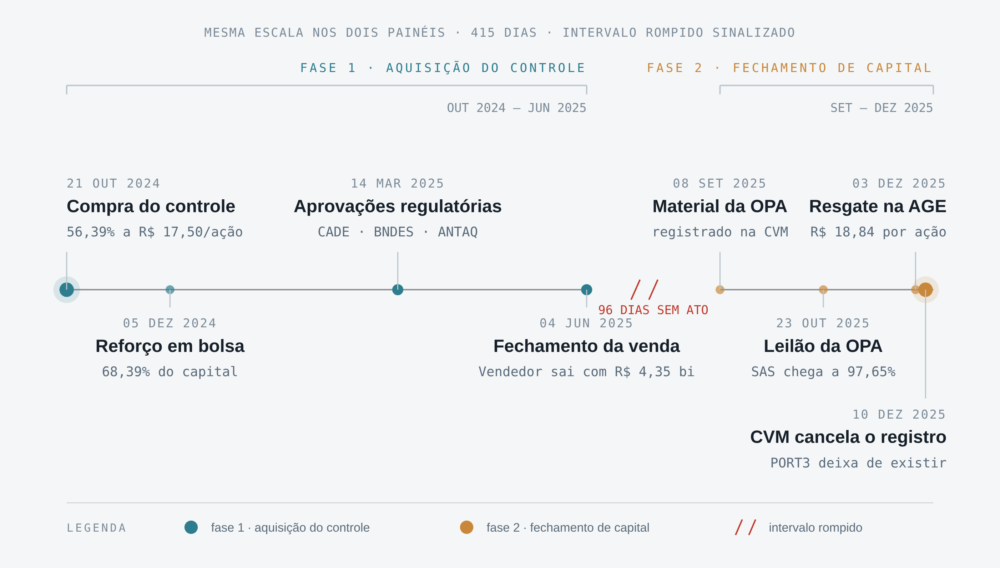
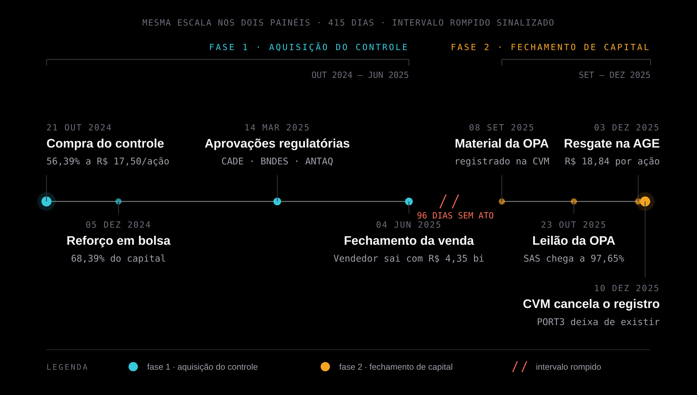
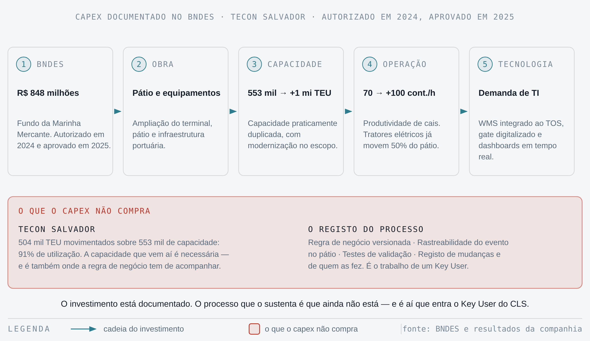
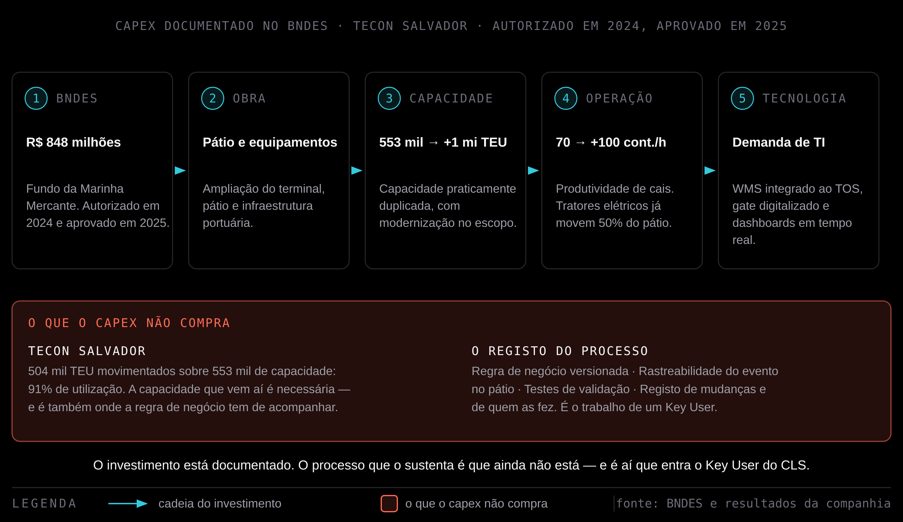
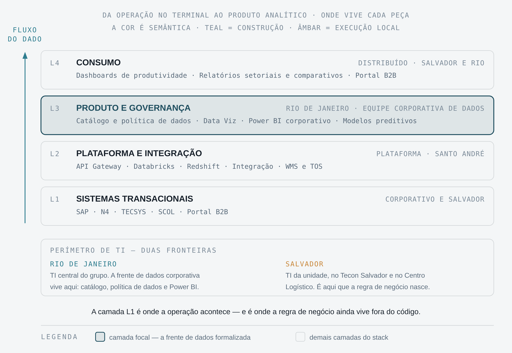
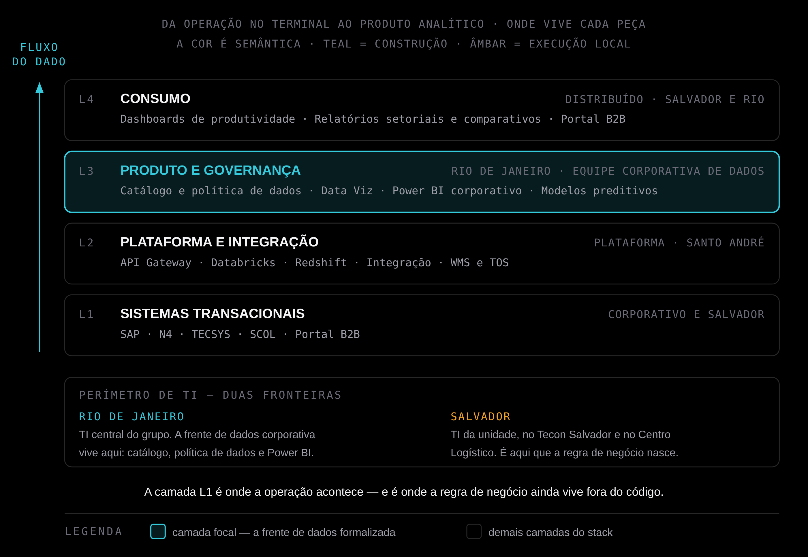

A proposta em três linhas
O que este documento é
Em três linhas
A Wilson Sons comprou-se a si mesma em 2025 — 56,39% → 68,39% do capital, por R$ 17,50/ação — e um investidor de infraestrutura comprou o controlo. O Terminal de Salvador recebeu R$ 848 milhões do BNDES e vai passar de 553 mil para mais de 1 milhão de TEU por ano. Onde cresce o volume, crescem as costuras: entre Operações e TI, entre sistemas que vieram de duas empresas, e entre o dado que nasce no chão e o indicador que o comité olha.
A vaga de Analista Administrativo JR (Key User do CLS) pede exactamente o trabalho que fecha essas costuras: transformar regras de negócio em rotinas documentadas, validadas e auditáveis. Este documento mostra seis costuras específicas, como cada uma se prova, o que não sei sobre cada uma — e uma proposta de 90 dias para as tratar.
Não é auditoria
Nenhum sistema foi acedido. Tudo o que aqui afirma sobre a companhia vem de documentos públicos e verificáveis.
Não é ataque
A palavra é costura: um ponto onde um processo tem de ser decidido por alguém, e esse "alguém" não está no código.
É executável
A demonstração do método é código a correr: 8 regras versionadas, 9 normas datadas — 6 citadas por regra, 25 testes a passar.
Acto 1 a 5
A história que os números contam
Uma empresa de logística portuária foi comprada por um fundo de infraestrutura, passou por uma OPA, e recebeu um financiamento de 848 milhões para dobrar a capacidade de um terminal enquanto, ao mesmo tempo, transformava a sua própria TI. É este o contexto em que a vaga foi aberta.


| Acto | O que aconteceu | Número | Leitura |
|---|---|---|---|
| Venda à MSC | A MSC passa de 56,39% a 68,39% do capital, a R$ 17,50 por ação, com o preço definido por laudo independente. | 56,39% → 68,39% · R$ 17,50/ação | A companhia deixa de ter controlo disperso. Facto |
| OPA unificada | Oferta pública unificada para as ações remanescentes, concluída em outubro. | 97,65% · R$ 18,53/ação | Quase totalidade do float sai do mercado. Facto |
| AGE — resgate | Assembleia de acionistas pediu a recompra das ações não negociadas. | R$ 18,84/ação | Preço de referência da companhia, já sem float relevante. Facto |
| Laudo Apsis (base 31/12/2024) | Avaliação independente: DCF, VWAP de 3 meses e EV/EBITDA. | DCF R$ 16,48 · VWAP-3M R$ 17,08 · EV/EBITDA 6,55× | Preço pago ≈ 2,5% acima do laudo — compra a valor justo, não a prêmio de controlo. Facto |
| Financiamento BNDES | Recursos para o Tecon Salvador, no âmbito do novo programa de investimento portuário. | R$ 848 milhões | Capex real, com desembolso e prazos. Facto |
| Expansão do Tecon | Capacidade de movimentação de contêineres. | 553 mil → > 1 milhão TEU/ano | Cerca de 70 → mais de 100 contêineres por hora. Facto Inf. |


Acto 3
O stack que herda quem entra
Uma empresa em crescimento e em processo de integração tem, tipicamente, mais de um sistema para a mesma coisa. O layer operacional não é o mesmo que o layer analítico — e é aí que a divergência começa.


O programa Data Viz é a camada de padronização de visualização com Power BI corporativo, e é o requisito explícito da vaga (BI: Power BI, Looker Studio / Data Studio). A lista acima é o conjunto de sistemas nomeados em fontes públicas da companhia e em instrumentos do BNDES; não é um inventário auditado do parque instalado. Inferência
O núcleo
As seis costuras
Cada costura é um ponto onde um processo tem de ser decidido por alguém e essa decisão não está em código. São as seis que consigo sustentar com documento público — e, em cada uma, o que não sei está escrito.
C1 · A fronteira de decisão Rio–Salvador
Decisões sobre o CLS tomadas no Rio; dados que nascem em Salvador. A regra existe, mas chega a quem tem de aplicá-la já traduzida por terceiros.
C2 · A regra fora do código
Regras de negócio — conferência de carga, excepções, prazos — documentadas em manuais e na cabeça de quem opera, não em algo que se versiona e se testa.
C3 · O dado nasce fora do BI
O evento que o comité quer contar é criado no chão, num terminal ou numa central de chamadas. Se o registo nasce depois do indicador, o indicador está sempre meio passo atrasado.
C4 · A janela pós-M&A
Dois conjuntos de processos, dois conjuntos de sistemas, uma janela de integração. Documentar "sempre que houver mudança" é a tarefa que ninguém tem tempo para fazer e toda a gente precisa.
C5 · O capex antes da equipa de dados
R$ 848 milhões de capacidade nova a entrar em produção enquanto a camada analítica ainda se está a formar. A capacidade cresce mais rápido do que o registo do que nela acontece.
C6 · A concentração do conhecimento
O conhecimento da operação está concentrado numa pessoa. A vaga existe porque essa pessoa está ocupada — e o risco não é a pessoa, é o processo.
Cada uma destas costuras tem, na página As costuras, o mesmo formato: o que se observa, porque importa, como se prova, o que não sei e o que faria. As costuras são a hipótese de trabalho, não um diagnóstico confirmado.
Como isto se lê
A escada de leitura — e as regras do que não se diz
Um documento para três públicos só funciona se cada um encontra, no mesmo sitio, o nível de detalhe que tem capacidade de ler. E só funciona se o sub-texto for coerente com o texto.
Leia a capa e o resumo
Duas páginas. A pergunta que o RH precisa de responder: a quem devo encaminhar isto? Resposta: à gestão do CLS e à gestão de TI.
Leia o diagnóstico e o plano
Seis costuras, uma proposta de 90 dias, seis perguntas de decisão. O gestor não precisa de crer em mim: precisa de decidir.
Leia o método e a evidência
O motor de regras, os casos de fronteira, os 25 testes e a tabela de todos os números com a fonte de cada um. É aqui que se vê se isto é verificável.
As regras do que não se diz
Este documento é uma candidatura, e uma candidatura escolhe um ângulo. Três coisas ficam de fora, de propósito — e é a forma de declarar que o que está aqui é o que está aqui:
1 · Nada sobre hipóteses internas de organização. A companhia tem uma leitura possível sobre si própria que eu não tenho obrigação de trazer para um primeiro contacto, e cuja leitura errada me custaria a vaga sem me dar nada em troca. Escolhi o ângulo em que o meu trabalho é útil e verificável: processo e dados. Se a companhia quiser discutir organização, é uma conversa de 20 minutos — não um anexo de candidatura.
2 · Nada sobre "vulnerabilidades". Não houve teste. Não houve acesso. Chamar a isto vulnerabilidade seria tecnicamente falsa e comunicativamente um desastre. O que há é costuras: pontos onde um processo exige uma decisão que não está escrita. Isso é observação de estrutura, não ataque.
3 · Nada sobre pessoas que não consigo nomear. Não há gestor individual identificado em fonte pública verificada. Onde apareceria o nome de alguém, aparece o cargo. E, por isso mesmo, as figuras deste site não têm nomes: têm camadas e fronteiras.
O pedido
O que eu preciso — e o que não preciso
Três coisas, todas de uma vez
1. Um café de 20 minutos com quem manda no CLS e com quem manda na TI.
2. Acesso aos 6 processos que a vaga enumera, em qualquer estado de formalização.
3. Uma sessão de 30 minutos com quem opera o terminal.
Nada disto
Não preciso de um relatório de vulnerabilidades. Não preciso de acesso a sistemas. Não preciso que testem a minha senioridade com um teste de Excel — o anúncio já me diz que ele existe, e é o sítio onde eu apareço com a resposta pronta.
O que fica, se isto avançar
Uma peça que hoje não existe em lugar nenhum: o registo do CLS — os processos da operação de Salvador escritos, versionados, com a regra de negócio ao lado do relatório que a consome, e um registo de quem mudou o quê e quando. É o entregável de um Key User, e é também a forma mais concreta de medir se os 90 dias valeram.
Este documento não é recomendação de investimento, proposta comercial, nem auditoria técnica. Não houve acesso, teste ou observação de qualquer sistema da companhia. Os números de terceiros (BNDES, laudo Apsis, CVM, B3, RFB, Siscomex, CGIBS, MDIC/Camex) são públicos e estão identificados; os números que são inferência minha estão marcados como tal e a razão está escrita ao lado. Documento compilado a 27 de novembro de 2026.